About Pirl 2.0
Pirl has migrated from it's original protocol ( ethash ) and it's now based on substrate.
Pirl 2.0 is fully decentralised and is managed by the community using democracy modules.
This new version of Pirl is a continuity of the initial idea. The major changes are:
- New monetary policy
- decentralised treasury
- validation of the blockchain using Validator node
- staking ( you can nominate a validator and stake on top of it )
Protocol informations:
- ID: PIRL
- ss58Format: 42
- TokenDecimals: 12 ( previously 18)
- TokenSymbol: PIRL
- RPC port: 9933
- WS port: 9944
- P2P port: 30333

Particiapte in Pirl 2.0
Run a validator
Nominate
Governance
Validator
Validators secure the Relay Chain by staking PIRL, validating proofs from collators and participating in consensus with other validators.
These participants will play a crucial role in adding new blocks to the Relay Chain and, by extension, to all parachains. This allows parties to complete cross-chain transactions via the Relay Chain.
Validators perform two functions. First, verifying that the information contained in an assigned set of parachain blocks is valid (such as the identities of the transacting parties and the subject matter of the contract). Their second role is to participate in the consensus mechanism to produce the Relay Chain blocks based on validity statements from other validators. Any instances of non-compliance with the consensus algorithms result in punishment by removal of some or all of the validator’s staked PIRL, thereby discouraging bad actors. Good performance, however, will be rewarded, with validators receiving block rewards (including transaction fees) in the form of PIRL in exchange for their activities.
WARNING
If you don't use the right requierements you could have your stake slashed, this guide is a baseline, if you do it your own way be sure to know what you are doing or you will loose money.
Requirements
The most common way for a beginner to run a validator is on a cloud server running Linux. You may choose whatever VPS providers that your prefer, and whatever operating system you are comfortable with.
The transactions weights in Pirl were benchmarked on standard hardware. It is recommended that validators run at least the standard hardware in order to ensure they are able to process all blocks in time. The following are not minimum requirements but if you decide to run with less than this beware that you might have performance issue.
Minimum Hardware :
- 10GB ram, 60 GB Storage, 4 CPU , stable server uplink connection with fixed IP
Ideal Hardware :
- 60GB ram, 300 GB Storage, 6 CPU, stable server uplink connection with fixed IP
Using Ubuntu 18.04 :
Install Rust Once you choose your cloud service provider and set-up your new server, the first thing you will do is install Rust.
If you have never installed Rust, you should do this first. This command will fetch the latest version of Rust and install it.
curl https://sh.rustup.rs -sSf | sh
Otherwise, if you have already installed Rust, run the following command to make sure you are using the latest version.
rustup update
Finally, run this command to install the necessary dependencies for compiling and running the Polkadot node software.
sudo apt install make clang pkg-config libssl-dev build-essential
Note - if you are using OSX and you have Homebrew installed, you can issue the following equivalent command INSTEAD of the previous one:
brew install cmake pkg-config openssl git llvm
Install & Configure Network Time Protocol (NTP) Client NTP is a networking protocol designed to synchronize the clocks of computers over a network. NTP allows you to synchronize the clocks of all the systems within the network. Currently it is required that validators' local clocks stay reasonably in sync, so you should be running NTP or a similar service. You can check whether you have the NTP client by running:
If you are using Ubuntu 18.04 / 19.04, NTP Client should be installed by default.
timedatectl
If NTP is installed and running, you should see System clock synchronized: yes (or a similar message). If you do not see it, you can install it by executing:
sudo apt-get install ntp
ntpd will be started automatically after install. You can query ntpd for status information to verify that everything is working:
sudo ntpq -p
WARNING: Skipping this can result in the validator node missing block authorship opportunities. If the clock is out of sync (even by a small amount), the blocks the validator produces may not get accepted by the network. This will result in ImOnline heartbeats making it on chain, but zero allocated blocks making it on chain.
Building and Installing the pirl Binary
Centos 8
Install and configure time
dnf install chrony
Enable it
systemctl enable chronyd
Allow the process in firewall
firewall-cmd --permanent --add-service=ntp && firewall-cmd --add-port=30333/tcp --permanent && firewall-cmd --reload
If you have never installed Rust, you should do this first. This command will fetch the latest version of Rust and install it.
# curl https://sh.rustup.rs -sSf | sh
# source $HOME/.cargo/env
Otherwise, if you have already installed Rust, run the following command to make sure you are using the latest version.
rustup update
Install development tools
dnf group install "Development Tools" -y
Install other tools needed
dnf install -y cmake llvm llvm-devel clang
Install rust tools
rustup toolchain install nightly-2020-10-06
rustup update nightly
rustup update stable
rustup target add wasm32-unknown-unknown --toolchain nightly-2020-10-06-x86_64-unknown-linux-gnu
clone Pirl from github
git clone https://github.com/pirl/pirl-2_0
move to pirl-2_0 directory and build it
cargo +nightly-2020-10-06-x86_64-unknown-linux-gnu build --release
Copy the binary ready to use
cp -rp target/release/pirl /usr/bin/
Make the service permanent
create systemd file in /usr/lib/systemd/system/pirl.service
[Unit]
Description=Pirl Validator
After=network-online.target
[Service]
ExecStart=/usr/bin/pirl --port "30333" --ws-port "9944" --rpc-port "9933" --validator --name "CHANGE IT TO A DESIRED NAME"
User=root
Restart=always
ExecStartPre=/bin/sleep 5
RestartSec=30s
[Install]
WantedBy=multi-user.target
Check if your node is appereing in the telemetry UI : https://telemetry.polkadot.io/#list/Pirl
Step 2 Assign the node to an account
We assume that you have already claim your coin from Pirl 1.0 (see how to claim) or you already have an account with your Pirl on it.
You need to create an controller account in order to do the next steps.
The stash account serve as you "cold wallet" with all your precious coin
The controller account serve as a manager to your stash account
Always keep in safe place your keystore file or your 12/24 words seed
To create an controller account, add account

Choose any name that suit for you 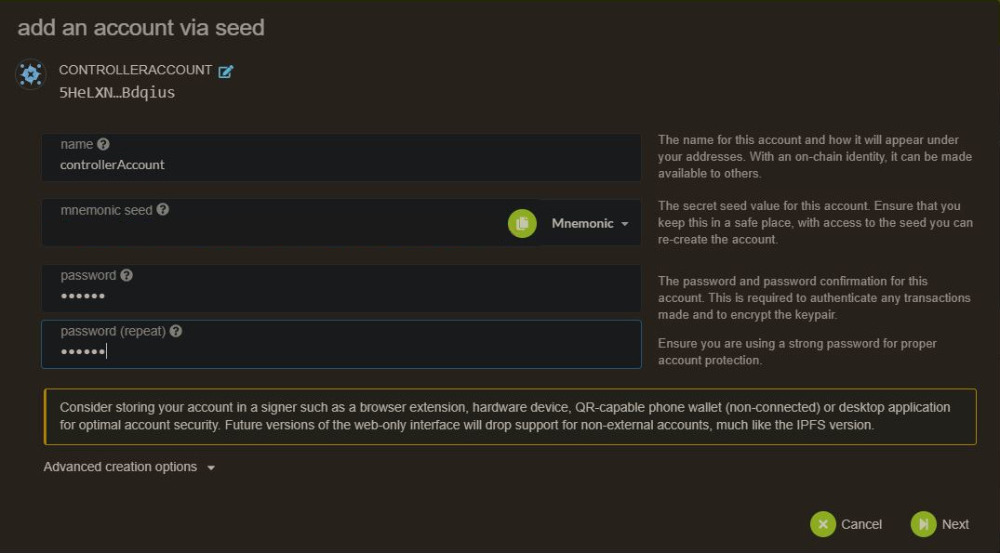
Then send some pirl (from your stash account) for covering network fees

You can proceed to the next steps
Create session key:
Go in you terminal where the node is installed and paste the current command, you will have a session key of your node.
curl -H "Content-Type: application/json" -d '{"id":1, "jsonrpc":"2.0", "method": "author_rotateKeys", "params":[]}' http://localhost:9933
Submitting the setKeys Transaction:
Go to the explorer you can now create a validator, use the key generated above to paste in the form.
Last step, hit the validate button when the transaction is confirmed.
In case you have already bonded your pirl
If your currently nominate, you can stop that with square button
You can add your session key in the associate button


Voila, you are all set
List of VPS providers
Written by Masterdubs
How to be a Nominator
Requirements
You need an account with some pirl on it. If you have a Pirl 1.0 account and do not have claim it yet on the new blockchain, please refer to this tutorial
Setup
-
You need to create a new account for control your staked
 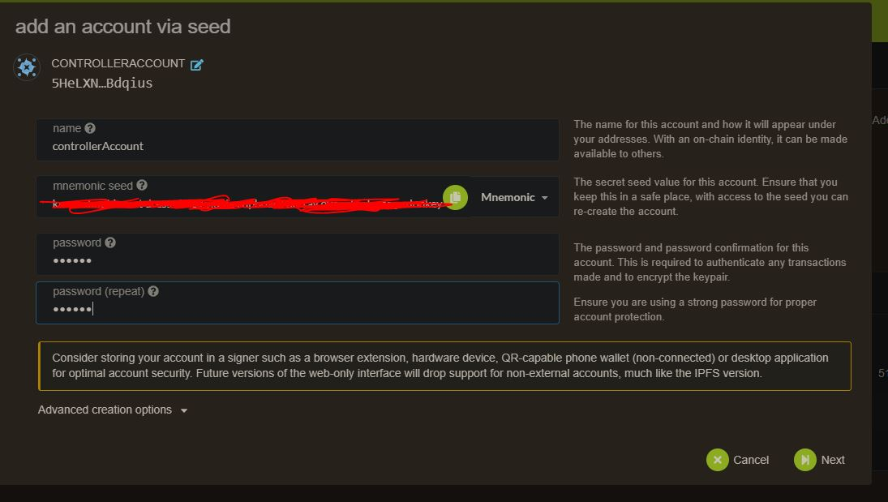
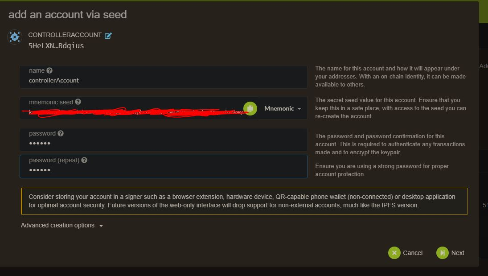 -
Then send some pirl for covering network fees

-
Then go to staking panel

-
Add nominator 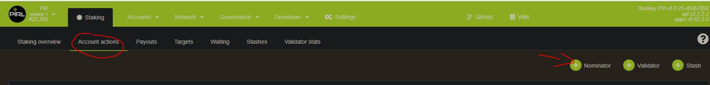
-
For stash account, select the account with you stash (the one with all your precious pirl) and for controller account, the newly created account in step 1

-
Choose your validator, you can choose multiple validators. This choice is up to you.
WARNING
For avoiding being slashed (aka loose money), choose wisely your validator ! The validator need to have good uptime (99.99%) and good behaviour (see How does slashing works ? for more info about slashing). The list below is purely indicative and not a recommandation.

Info
Rewarding system work as follow :
Validator are reward by block reward + 20% transaction fee. This do not depend on stake amount !
Validator take a % commision (you can see that info in staking overview)
Validator and Nominator share the remaining reward according to their share
Eg. Validator has 100 pirl staked, NominatorA has 50 pirl staked and NominatorB has 200 pirl staked
Validator get 28.57% of the remaining reward, NominatorA 14.29% and NominatorB 57.14%.
You can check potential profit/era in the targets panel, but be carreful, this value change according to nomination on each era 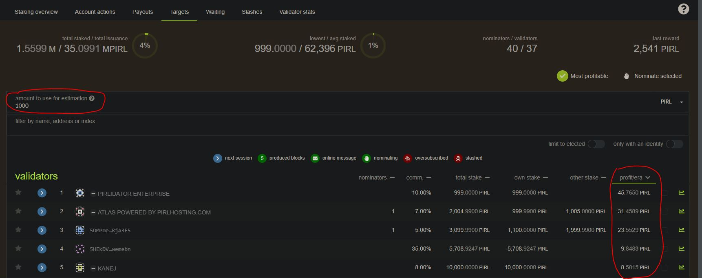
-
Now you need to authorize transaction

-
And tadaa ! Enjoy stacking with Pirl. Your all done. 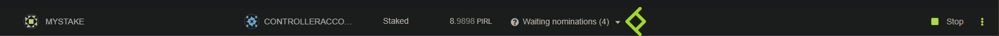
Written by WeHaveCookie
How to setup identity
Go to account panel
If you want to name your validator, be sure to select the stake account and not the controller account
Click on 3 dot for the right account, then on Set on-chain identity

Then fill your info and click on Set identity

That's it !
Written by WeHaveCookie
How to submit a proposal
Hey fellows ! In this guide, you will see how to create and submit a proposal to the council.
Proposal allow any users to share idea to improve the network and submit this idea to the council. Proposal need to be seconds by other users to be submitted to the vote of the council.
Go on democracy panel then start by Submit preimage
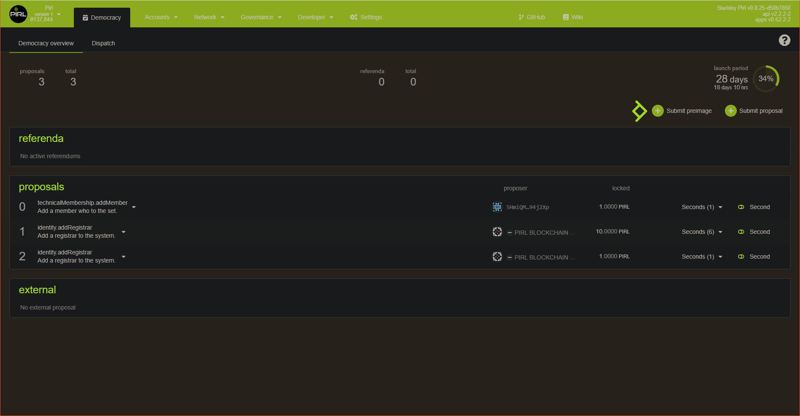
Then choose the right category for your proposal, in this case we want to propose a new bounty so we choose treasury then proposeBounty
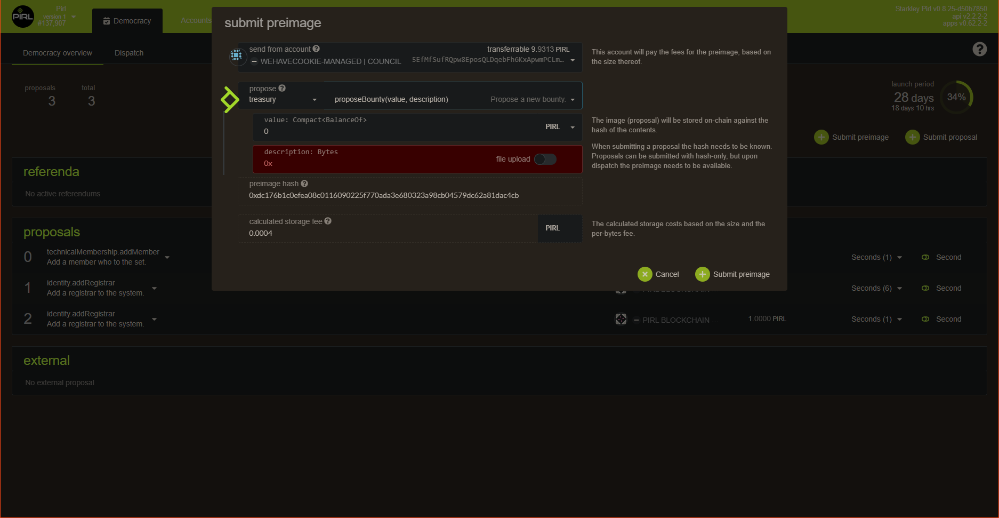
We specify the value (in this case the reward of the bounty) and description for this proposal. Then before submit, copy-past the preimage hash. Do not forget to do this otherwise you will need to retrieve the hash into the explorer.
Currently the network doesn't allow user to put text field. So you will need to detail your proposal into the discord channel
proposal-votingThis feature is under the hood.
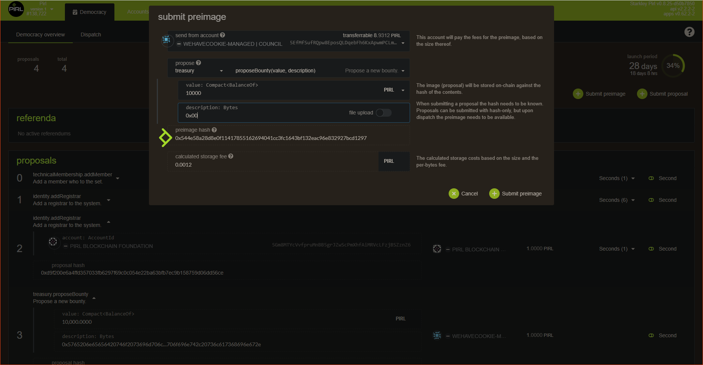
When this is done, click on submit proposal

Copy the preimage hash from the previous step
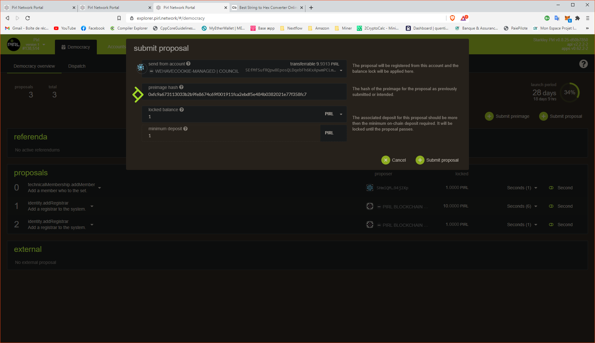
You should see your new proposal now

You can now give us more context on discord !
And thanks you for your contribution 
Written by WeHaveCookie
How to vote for candidates to council
Hey fellows ! In this guide, you will see how to cast your vote for nominate council member
It's pretty straigthforward but I think it's important to do a note on this, cause it's an important process in PIRL 2.0
All proposals and treasury tips are submitted to the vote of the council. They have the power to improve the network. So i'ts important to cast your vote and choose wisely.
Go on council page

You can see some info like current council members and candidates for next election. Council members are elected for 7 days.
On the top right, you can either vote for next election or submit a candidacy to be maybe into the next council.
Click on vote to cast your vote.

You can see your vote value (equal to the pirl amount of your account used to vote)
You can votes for more than 1 user. Just be carefull because vote is prioritized.
Do not forget The amount used for vote will be locked (not available for transfer)
Thanks you for your participation into PIRL 2.0 democracy 
Written by WeHaveCookie
How to make a treasury tips
Hey fellows ! In this guide, you will see how to submit a treasury tips.
If you wonder how you can propose a tip for people that you want they deserve some kind of gratitude, you could propose a tips !
Go on the tips page from Treasury tabs : https://explorer.pirl.network/#/treasury/tips

Then click on Propose tip

You will need to choose a beneficiary, fill the tip reason (why council shoud accept this tips request) then a tips value. Council can suggest their own after tips request was made.
And it's all set.
Tips should be done with valable reason ! Council will cast vote on that
Thanks you for contributing in PIRL 2.0 
Written by WeHaveCookie
Welcome to the new Pirl 2.0 on substrate.
Pirl has migrated from it's original proof-of-work protocol ( ethash ) and are now Nominated Proof-of-Stake (nPOS) based on substrate.
It`s time to claim your new Pirl 2.0.
You can claim your "old" Pirl by following the guides supplied in this Wiki.
Claim are based on your balance at block 7 650 000 on the old chain. (Nov 16, 2020)
- Claim only has to be done once per old Pirl wallet.
- Pirl stored on STEX, Graviex and Sistemcoin at block 7 650 000 has been swapped by exchange.
Start by making yourself a new account in the new Pirl Portal as described in the guide.
Take your time and read the information given in the Wiki.
Welcome to Pirl 2.0 !
This tutorial covers how to make a new Pirl 2.0 wallet adress.
Pirl 2.0 - Portal:
Go to Pirl 2.0 Portal - https://explorer.pirl.network
The new Pirl portal contains wallets,explorer,stats,voting,staking ++
To open a new Pirl Account/wallet on the new chain, click “Add account”

- Insert a wallet name. Important! Create backup of Mnemonic and store in a safe place.
- Make a password for your new account
- Click “Next”

Summary page.
- Click “Save” to generate the new wallet and new Keystore file.
Important! Remember to backup your wallet info, and keep it somewhere safe.
YOU are the only responsible for your own wallets.
General info.
To find general info, click on the wallet name (1)
To copy wallet adress click on symbol (2) or (3)

Written by FanThomas
Claim PIRL coins from old chain to Pirl 2.0
This tutorial describes how to claim your Pirl from “old chain” to Pirl 2.0.
Balance of Pirls where taken from snapshot at block 7 650 000, meaning you will only be able to claim what you had in balance at this block.
In this tutorial we will use the MEW wallet and Pirl 2.0 Portal.
Before proceeding, you will have to create a wallet in the Pirl 2.0 Portal and log in to your Pirl wallet in MEW using your Keystore file.
If you dont get any Pirl balance in the MEW wallet, please check your Network settings (1) and set to (PIRL) as shown in picture below.
- Note: It has been tested and verified that the claim works fine without changing the network as well.
Pirl 2.0 Portal https://dashboard.pirl.network

In Pirl Portal, click Account and choose “Claim Tokens”.

Choose your Pirl 2.0 wallet that you want to use for your claim, and click “Continue”

Copy your Pirl adress from MEW (1) and paste in to Pirl 2.0 Portal (2), and click “Continue”

Go to “Message” in MEW (1) Copy string from Pirl 2.0 Portal (2) and paste in to MEW (3), and click “Sign” and “Confirm Signing” in the next box.

Copy signature message from MEW (1) and paste in to Pirl 2.0 Portal (2), and click “Confirm claim”.

If everything goes well, you will get a confirmation message as shown below. Click “Claim” and then “Submit” in the next box to collect your Pirls.

After a few seconds your Pirl 2.0 balance will be updated with the claimed Pirl.

Well done !
If you have any feedback or comments to this tutorial, please make a reply in this forum.
Written by FanThomas
How to connect your ledger wallet through MEW for claiming your asset
Firstly, go to MEW then click on Access My Wallet

Then select Hardware 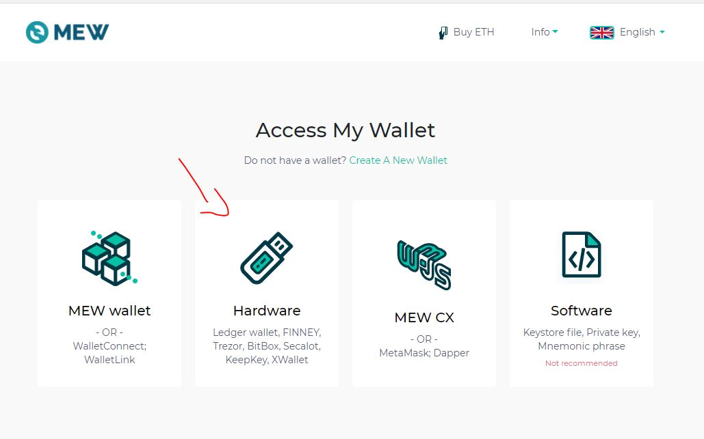
Then select the kind of hardware wallet you use (in our case Ledger, but should be revelant for other)

Do not forget to open the pirl app in your Ledger
Then click on the arrow next to Ethereum to see all network available 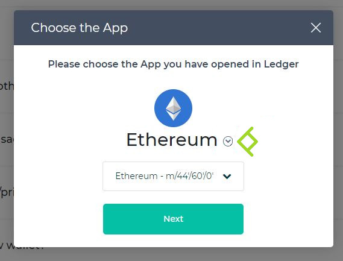
Then select the Pirl network

Then choose your address, check ti accept Terms and tada ! 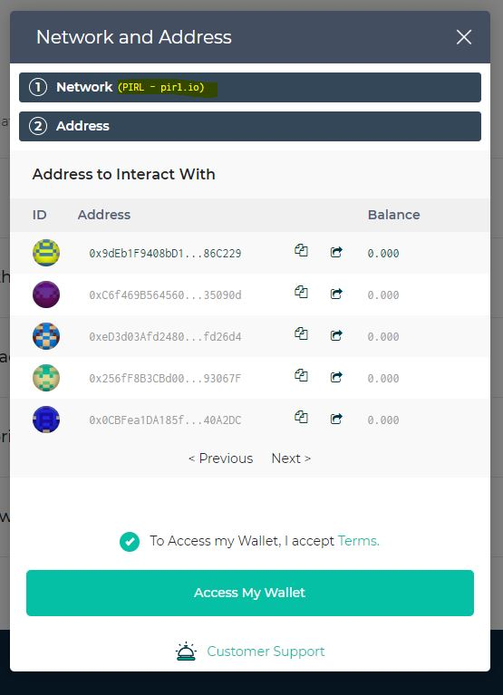
Now you can proceed to claim guide
Written by WeHaveCookie
Migration FAQ
Fast access
Claiming
What should I do to switch to pirl 2.0 ?
Follow the claiming guide
We have until when to claim for yours Pirl 2.0 ?
There is no time limit set.
If I keep my PIRL on the exchange, is the change to the new blockchain automatic ?
Yes, the exchanges will swap your PIRL automatically. (Please don´t hold your coins longer at any exchange, not your keys, not your coins)
I used the web wallet, I'm safe for the claim ?
Yes, you can claim your coins with web wallet. Follow the claiming guide
Can I claim my coins with ledger wallet ?
Yes, be sure to have backup phrase and latest firmware.
Masternode
Do I need to disable the masternode to get my claim in Pirl 2.0 ?
No, you will get your coins even if they are locked in the contract.
I didn't unlocked the coins locked in masternode contract, are they lost ?
No, the coins locked in the masternode contract(s) will be available freely in your wallet after claiming process.
How to delete all the old Pirl services on masternodes ?
BE SURE TO NOT HAVE PIRL KEYS PRESENT
service pirl stop && service marlin stop && rm -rf /root/.pirl && rm -rf /root/.marlin && systemctl disable pirl && systemctl disable marlin
General
Does wPIRL need to be bridged back to pirl legacy chain for swap of coins?
Yes, you need to bridge all your coins back to be able to swap your PIRL. After the snapshot it's not possible until we re-implemented it. No date or schedule yet.
Is Ledger or any hardware wallet supported at the start of the new chain ?
Not at the beginning but we will support hardware wallets at a later stage. No date or schedule yet.
How does slashing works ?
- Level 1: isolated unresponsiveness, i.e. being offline for an entire epoch. No slashing, only chilling.
- Level 2: concurrent unresponsiveness or isolated equivocation. Slashes a very small amount of the stake and chills.
- Level 3: misconducts unlikely to be accidental, but which do not harm the network's security to any large extent. Examples include concurrent equivocation or isolated cases of unjustified voting in GRANDPA. Slashes a moderately small amount of the stake and chills.
- Level 4: misconduct that poses a serious security or monetary risk to the system, or mass collusion. Slashes all or most of the stake behind the validator and chills.
Can I get my coins back if I stake or create a validator ?
Yes you can unlock them when you want, you will have to wait the cooldown period to get it credited in your wallet, actual waiting period is 28 days.
Validator
What is the validator reward amount ?
We can calculate it precisely, it depend on the network staking rate. Validator will have minted coins plus 20% of the transfert fees ( 80% goes to decentralised treasury ). Rewards are calculated based on era points, which have a probabilistic component. In other words, there may be slight differences in your rewards from era to era, and even amongst validators in the active set at the same time. These variations should cancel out over a long enough timeline.
What is the minimum requierement for a validator ?
The absolute minimum requrements to run the validator node are described below. This settings are NOT recomended as this could lead to unstable node and you could end up getting slashed!! If running validator node with specs close to minimum you must monitor your node and set up warnings for load etc..
- Minimum: 10 GB RAM, 60 GB Storage, 4 CPU
- Recomended: 60 GB RAN, 300 GB Storage, 6 CPU
- Public IP on validator node needed for basic setup. (More information will come on how to setup a secure validator with sentry nodes)
- Stabile internet connection are required. The validator nodes plays a very important role by securing the network and we recommend renting VPS from providers with good infrastructure and not trying to set up at home.
Read more about validators requierements here
Written by Masterdubs, Edited by WeHaveCookie
Contribution
How can I contribute to the docs ?
Fork and create a pull request on this repo: https://github.com/starkleytech/pirl-docs
[Windows] How to setup Github + GitKraken and start contribute
Hey fellow, if you seek to contribute with pirl docs, the following guides should be usefull for people who didn't use github.
In this guide, you will see how to create an account, fork the main repo and clone it to start to contribute
Requirements
Firstly, go to github and create an account if you doesn't have one yet
Then I recommand you to use GitKraken (free for open source, it's our case), you can download it on https://www.gitkraken.com/
When it's done, connect with your github account.
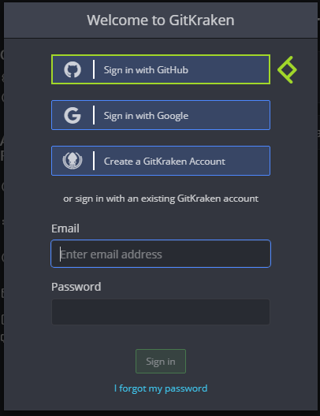

You'll need a text editor, you can use any one you want.
For instance I use notepad++ : https://notepad-plus-plus.org/downloads/
You have now the requirements needed to setup things !
Setup
Go to the official depot : https://github.com/pirl/pirl-docs
Then click on fork

You can retreive the fork under Your repositories

Then you can access it by clicking on the name

Now click on Code then copy the URL

Go on gitkraken then click on clone a repo

Choose your path then paste your previously copied URL 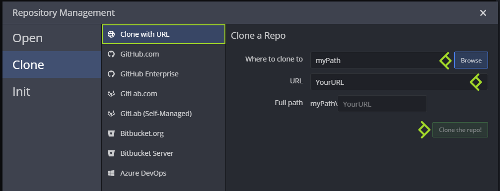
You can now open the cloned repo

You will need to download mdbook for windows at https://github.com/rust-lang/mdBook/releases

Extract it next to your pirl-docs folder

Then go on File -> Preferences...

Then select PowerShell under Default Terminal

You can exit Preferences.
You all now set to start contribute ! See the next guide learn to how to write your first docs
Written by WeHaveCookie
[Windows] How to write your first doc
Hey fellow, if you seek to contribute with pirl docs, the following guides should be usefull for people who didn't use github.
In this guide, you will see how to create a new guide.
Requirements
You will need to follow this guide first if not already done : Setup Github GitKraken
Setup
Each time you want to contribute, you will need to do this following step
Under File, click on Open Terminal
Then execute the following commande ..\mdbook.exe serve

You can reduce this window but do not close it (otherwise you will not be able to see your change in live)
Create your first guide
Now you are all set to create your first guide !
You can see other guide under pirl-docs\src like this

.md stand for markdown, it's a way to write document with bunch of usefull formating stuff
For example, let's create together the next guide of this serie ! (Guideception)
Create a new .md file (you can also duplicate an existing one)

For beginning, I'll just add the title

this snippet give this
[Windows] How to submit your contribution
Tips
#stand for title,##for subtitle,###sub-subtitle and so one
Then I add some text

this snippet give this
[Windows] How to submit your contribution
Hey fellow, Hey fellow, if you seek to contribute with pirl docs, the following guides should be usefull for people who didn't use github.
In this guide, you will see how to submit your contribution
Tips
You will need to add an extra line between your text if you want an line break
Then I add some link to other guides

this snippet give this
You will need to follow the 2 first guides :
Tips
If you want to add a link :
[DisplayName](MyPathOrURL)If you want bullet, simply add
-on each line
Then I add some pictures to my guide

this snippet give this
Firstly, if you go back on gitkraken, you will see some changes
Tips
If you want to add a picture :
If you want to add a clickable picture (to allow user to see it in full screen) :
[<img src="ImgPath"/>](ImgPath)The path is based on the file location, you can add
..to access parent folder
You can find some usefull markdown keyword here
Finally, you will need to add your guide into the SUMMARY.md like this

And voila, it's now time to you to write your own guide and contribute to PIRL 
When you have finished writing your guide, you can move on to the next tutorial : How to submit
Written by WeHaveCookie
[Windows] How to submit your contribution
Hey fellow, if you seek to contribute with pirl docs, the following guides should be usefull for people who didn't use github.
In this guide, you will see how to submit your contribution
Setup
You will need to follow the 2 first guides :
Make a new branch
Now you have finished to write your first guide, you will need to push that work on github and create a pull request
No worries, we do that together step by step.
Firstly, if you go back on gitkraken, you will see some changes

On the right panel, you can see your changes. You will need to stage only the file you have created / edited.
By clicking on the file, you can see the diff view

If all seems good, you can stage your files
- One by one

- Multiple files at once (ctlr + clic)

When you have stage all your files, you can add a commit message then commit !

You will now see your commit on gitkraken

You can now create a new branch. Click on your commit, then on Branch and give it a cool name ! Then press enter

Push your new branch
Then, you need to push your beautiful new branch. Simply click on Push button.

The first time you push a new branch, you will see that. Just click on submit, default parameter are good

Create a Pull Request
Now you can create a pull request ! The final step
You can do that directly trough gitKraken. Find Pull Request section in the left panel and click on + button

Then setup as the following
- Select your repo (aka GitHubUsername/pirl-docs)
- Select the official (aka pirl/pirl-docs)
- Select the branch you just created
- Select master
then fill Title and Description section to give a little context.
And finally click on Create Pull Request button

You can view your pull request directly in the official repo : https://github.com/pirl/pirl-docs/pulls

And voila ! You just need to wait approval from official team.
Thank you for contributing to Pirl and share the love 
Written by WeHaveCookie
Most usefull keyword in markdown
#for title,##for sub-title,###for sub-sub-title and so one**MyText**to write text in bold*MyText*to write text in italic***MyText***to write text in bold italic- `MyText` to write your text in
inline block MyText with some \*here and\* hereto escape character, display MyText with some * here and * here instead of MyText with some here and here> MyTextto create a blockquote
Blockquote
1. MyTextto create a numbered list
- First item
- Second item
- MyTextto create a bullet list
- First item
- Second item
[displayName](URL)to create text link. Like this FAQ
Pro tips
you can add tag to directly jump on specific section
[Validator Reward](../migrate/in_brief.md#what-is-the-validator-reward-amount-)to get this : Validator Reward
to insert a picture.
give that
Pro tips
If you want to have a clickable picture (to be able user to see it in full screen) use that instead
[<img src="../media/PirlHeart.png"/>](../media/PirlHeart.png.png)give usAnd if you want to scale it to put some heart
everywhere do that
<img src="../media/PirlHeart.png" width="20"/>

If you want to use more advance keyword, you can find plenty of docs here : https://www.markdownguide.org/basic-syntax
Written by WeHaveCookie
Credits :
Community guides
Polkadot wiki
Thanks to the contributors 
- Dptelecom
- Masterdubs
- Primate411
- Nymnah
- Packetflow
- MrFawkes
- Mkrufky
- Phatblinkie
- Trodys
- M4xcrypt0
- IskaNikolova
- WeHaveCookie